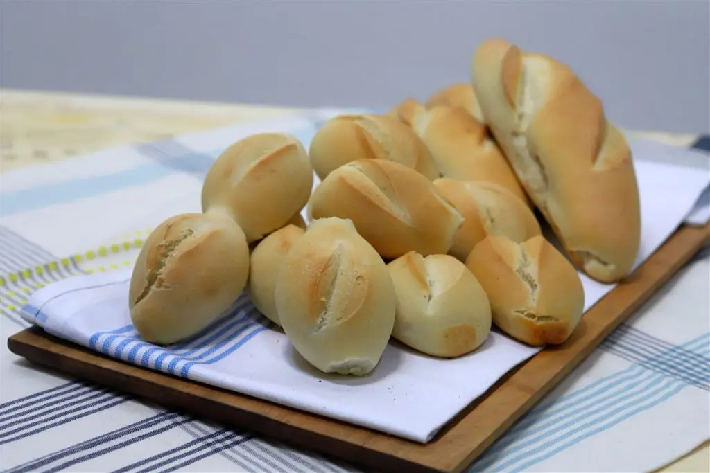
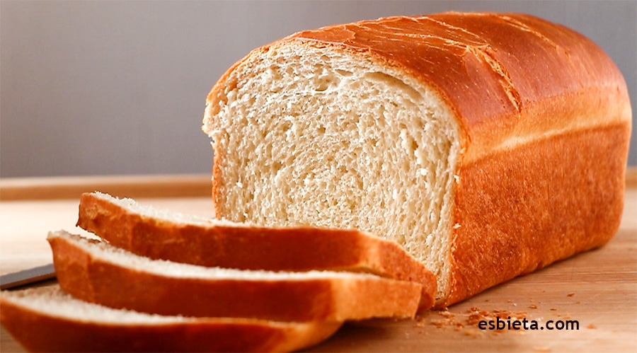

Padeiro Artesanal
Na Migas Amigas, cada pão é feito com paixão e os melhores ingredientes.
Pão Integral
Saudável e delicioso, perfeito para o café da manhã.

Pão Rústico
Com uma crosta crocante e miolo macio.

Pão de Centeio
Um clássico com um toque único e especial.

Pão de Aveia
Leve e cheio de fibra.

Pão de Passas
Perfeito para os amantes de doces.
Pão Francês
Ideal para acompanhar qualquer refeição.
Pão de Forma
O clássico para seus sanduíches.
Pão de Milho
Com um toque doce e textura única.

Pão de Chocolate
EM BREVE!
Pão de Alecrim
EM BREVE!
Pão de Cerveja
Para os aventureiros do sabor.

Pão de Espelta
Natural e fácil de digerir.